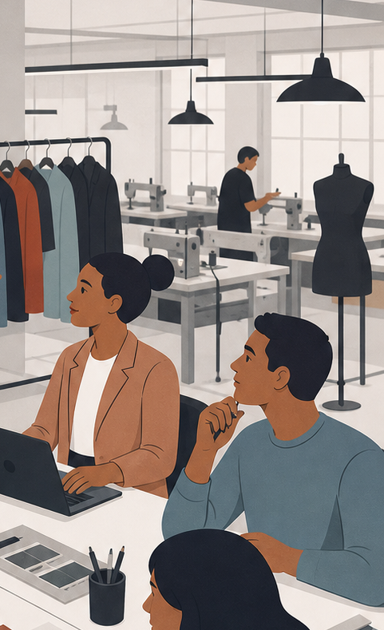
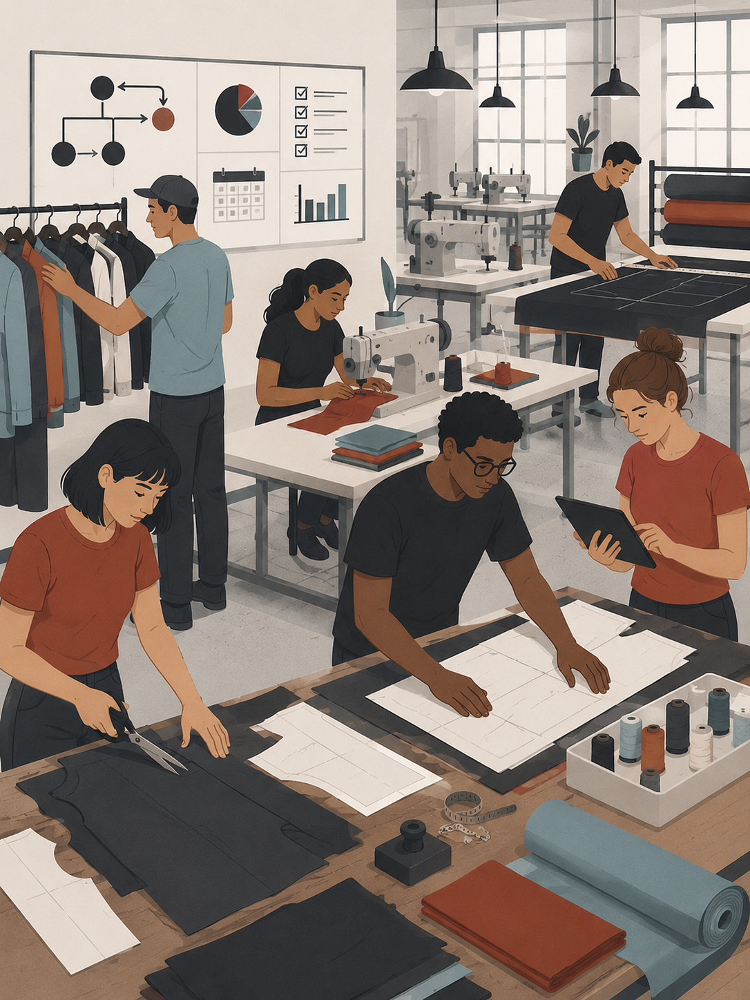

Estrutura operacional, posicionamento estratégico e desenvolvimento visual integrados.
A VMORDEKAI® atua no desenvolvimento de operações criativas e industriais voltadas para escalabilidade, organização sistêmica e fortalecimento institucional.
A metodologia combina branding, estrutura produtiva, gestão operacional e inteligência visual dentro de uma mesma lógica de implantação.
O objetivo é transformar negócios em sistemas mais consistentes, organizados e preparados para crescimento sustentável.
Operação também comunica.
Processos desalinhados geram ruído, desperdício e perda de percepção de valor dentro do mercado.
A VMORDEKAI® desenvolve estruturas capazes de conectar branding, produto, comunicação e operação produtiva em um mesmo ecossistema.
O foco não está apenas na estética, mas na construção de negócios coerentes, organizados e preparados para expansão.
Inteligência estrutural aplicada ao setor têxtil.
O RETEAR® funciona como um ecossistema modular voltado para rastreabilidade, reorganização produtiva e padronização operacional.
Os frameworks foram desenvolvidos para auxiliar empresas na redução de ruídos internos, melhoria de fluxo produtivo e integração entre setores.
A proposta combina tecnologia, metodologia e visão sistêmica para criação de operações mais previsíveis, organizadas e escaláveis.

Projetos desenvolvidos com foco em estrutura.
O portfólio institucional reúne aplicações relacionadas a branding, organização produtiva, desenvolvimento visual e implantação estratégica.
Cada projeto considera contexto operacional, identidade de marca, percepção de mercado e viabilidade de crescimento.
Desenvolvimento estratégico para marcas e coleções.
Estruturação de produtos, direcionamento visual, desenvolvimento técnico e alinhamento produtivo.
O modelo Private Label foi pensado para empresas que desejam lançar, reposicionar ou profissionalizar operações de moda com maior consistência estrutural.
A atuação pode envolver criação, organização operacional, branding, implantação de fluxo produtivo e suporte estratégico.

Consultoria estratégica, operacional e industrial.
Implantação de processos, organização produtiva, desenvolvimento estrutural, branding técnico e direcionamento empresarial.